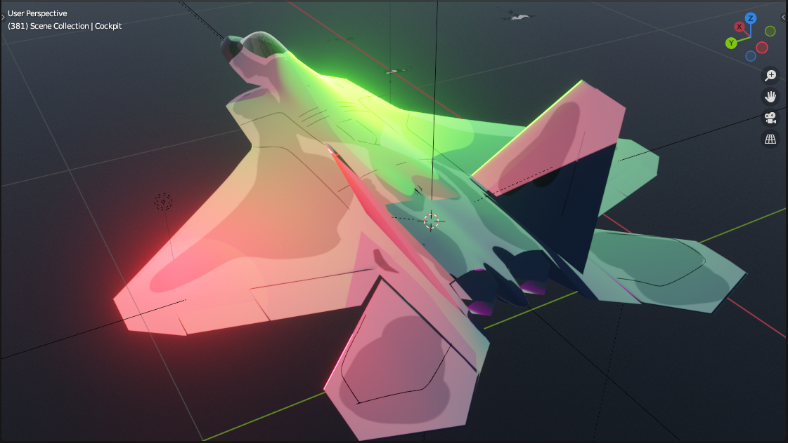

Project 1
Project 3
Project 5
Final Project
Project 1
Tutorial Animation
Tutorial Modification
Changed background
Tilted rotation axis of planets (Uranus is almost on its side)
Textured planets, moons, and sun
Arnold Render
Animated Camera
Mutliple cuts
Earth and mars have oceans, clouds, and atmosphere
Project 3
Bouncing Ball Animation

Principles of Animation:
- Squash and Stretch - the ball stretches during strong movements and squashes to absorb impacts
- Anticipation - both the ball and the cow squash before an important movement is performed,
for example the cow getting startled and the camera shaking before the big ball is on screen
- Staging - no two characters move on screen at the same time. There is at least a 1 frame gap between actions.
All object of interests lie on the thirds of the camera
- Slow-In and Slow-Out - Ease in and ease out are used for most movements. Cud has more frames on the
downswingthan the upswing, indicating slower and faster movement
- Follow-Through and Overlapping Action - the cow's head leads the body, giving the feeling of
a main and a proceding action. The cow overshoots the turn around for a frame and snaps back to its intended pose.
The ball follows through its jump by rolling a short distance afterwards
- Arc - the ball moves in a parabolic tragectory. The cow's startle and ball's startle is on the same arc
Beyond the 12:
- Gravity and friction have quadratic curves, character "muscle" movement has cubic curves
- Follow through must conserve energy
- Small characters move faster than larger ones
- Squash and stretch strength conveys material
- Unless heavy, smaller objects have less traction than larger ones. Balance with inertia
- Prioritize staging on screen than real location. Use forced perspective or different focal lengths if necessary


Project 5 (4/30)
Bouncing Ball Animation
The domino coloring was achieved by creating a new face on a generated polyCube, not extruding it all, selecting the
new vertices by array slicing, and setting the weight colors to 2 distinguisable colors. The data cannot proliferate
throughout a MASH network, so the code also has some functionality to transfer the vertex weights from the parent domino
to all others in the grid.

Final Project (5/18)
Advanced Non-Photo Realistic Rendering
This animation is a demonstration of an in-development shader for the fast rendering of cartoon/anime style 3D objects
in a way that unifies the look of hand-drawn digital draughtsmanship and digital rendering.
The model (the fighter jet) responds dynamically the position, intensity and color of moving light sources in the ACES colorspace
to increase the feeling of a wider dynamic brightness range than current industry methods. The model is also affected
by global illumination without the intervention of the artist. All lights are handled in a cel-shaded style with gradients
for added depth and detail in the lighting while maintaining the illusion of a hand-drawn object. Black linework is rendered before
post-procressing effects for further adjustment.

The effect of global illumination on the overcast scene is quite minimal, but can be better exploited in other lighting
scenarios

This stands in contrast to the current paradigm of selecting exclusively 2 colors for cel-shading (one lit and one shadow color)
with heavy post-procressing for increase appeal/detail, which at times can look quite primitive.
Evangelion 3.0 + 1.0 (2021)
Beastars (2019)
Anarchy in the Galaxy (2014)
Pacific Rim: The Black (2022)
Other Things of Note - The main jet model is dynamical deformed to create an illusion of flatness, eliminating a great
deal of perspective distortion and adds a subtle amount of imperfection to the model, giving it a hand-crafted look.
Comparison Video
Also, a variable frame rate was experimented with in my video for the purposes of mimicking the cost
cutting techniques of old, thus leading to a more believable hand-drawn animation with the timing of a human, not a machine. The pattern
to fully achieve this effect requires further investigation
Complications - The models for both the jet and the smoke trails were carefully modeled to minimize lighting artifacts
caused by rough normal interpolation. In isolation, either elements worked fine, but in tandem, especially the smoke trails mixed
with booleans, created multiple days worth of bugs and delays. A future approach may be to tackle the unique shading of the
trails with textures rather than very complexe geometry
Principles of Animation:
- Squash and Stretch - smear frames are used to express extreme motion
- Anticipation - sonic boom condensation cone preceed appearance of jet. Jet movements start with a small wind-up in the opposite direction

- Staging - the camera follows the main objects in motion
- Slow-In and Slow-Out - Ease in and ease out are used for most movements.